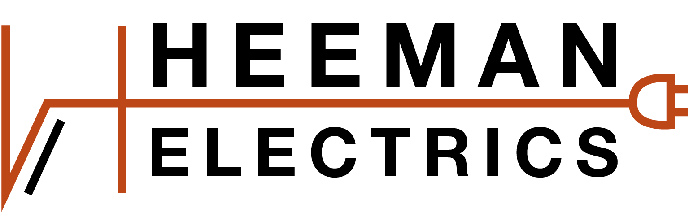
Overzicht van alle advertenties, teksten en beelden voor de wervingscampagne in Google Ads. Google combineert de koppen en beschrijvingen zelf; hieronder staan alle bouwstenen, niet elke combinatie.
| Account | Heeman Electrics · klant-ID 661-608-1384 (beheerd door DCTB) |
|---|---|
| Doel | Sollicitaties voor ervaren elektricien (prioriteit) en junior elektricien / stage |
| Regio | Enkel de buurt van Schilde: Search 10 km rond Schilde; Demand Gen Schilde, ’s-Gravenwezel, Wijnegem, Schoten, Brasschaat, Ranst, Zoersel, Zandhoven, Malle en Deurne |
| Landingspagina’s | heeman-electrics.be/jobs/ervaren-elektricien/ · /jobs/junior-elektricien/ |
| Budget | Max. ± € 200 in totaal (zie pagina 2) |
| Status | Beide campagnes staan als concept klaar. Niets is live. Start na facturatie door Bert en go van DCTB. |
Opgesteld door DCTB · 22 november 2026
Voor wie zelf zoekt op bv. “vacature elektricien”. Tekstadvertenties bovenaan Google.
| Budget | € 2 per dag (± € 61/maand) |
|---|---|
| Regio | 10 km rond Schilde, enkel mensen die er wonen of geregeld zijn |
| Bieden | Klikken maximaliseren, max. € 1,50 per klik |
| Schatting Google | ± 37 klikken per week |
Beeldadvertenties op YouTube, Gmail en Google Discover. Bereikt ook elektriciens die niet actief zoeken.
| Budget | € 70 in totaal over 2 weken (Google-minimum € 5/dag) |
|---|---|
| Regio | De 9 gemeenten uit het werkgebied (Demand Gen kent geen straal) |
| Bieden | Klikken maximaliseren |
| Schatting Google | ± 1.000 – 1.900 klikken in 2 weken |
| Periode | Search | Demand Gen | Totaal (max.) |
|---|---|---|---|
| Week 1–2 | € 2/dag | € 70 (vast bedrag) | ± € 98 |
| Week 3–8 | € 2/dag | — | ± € 84 |
| Totaal ± 2 maanden | ± € 182 |
Google mag op één dag tot 2× het dagbudget uitgeven, maar nooit meer dan 30,4 × het dagbudget per maand. Na week 2 bekijken we wat het best werkt en schuiven we eventueel budget door.
| Actie op de website | Meting (GA4) |
|---|---|
| Sollicitatieformulier verzonden | sollicitatie_verzonden |
| Klik op het telefoonnummer op een vacaturepagina | job_call_click |
| Klik op WhatsApp op een vacaturepagina | job_whatsapp_click |
| Klik op het telefoonnummer elders (footer, contact) | click_to_call |
Pad: heeman-electrics.be/jobs/ervaren · 1 = altijd de eerste kop (vastgezet)
| 1 | Vacature elektricien Schilde1 | 28 |
| 2 | Ervaren elektricien gezocht1 | 27 |
| 3 | Job als elektricien1 | 19 |
| 4 | Elektricien in Schilde | 22 |
| 5 | Min. 3 jaar ervaring | 20 |
| 6 | Voltijds, marktconform loon | 27 |
| 7 | Werven in de buurt | 18 |
| 8 | Nieuwbouw en renovatie | 22 |
| 9 | Ook domotica | 12 |
| 10 | Geen lange verplaatsingen | 25 |
| 11 | Werkkledij voorzien | 19 |
| 12 | Solliciteer online | 18 |
| 13 | Reactie binnen 5 werkdagen | 26 |
| 14 | Heeman Electrics | 16 |
| 15 | Kom ons team versterken | 23 |
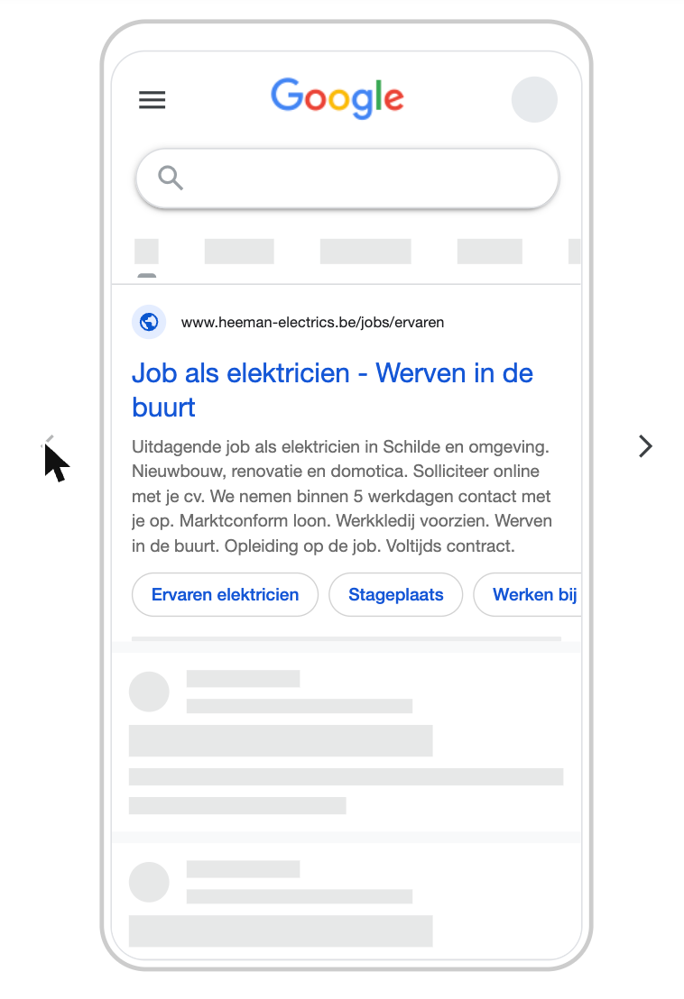
| 1 | Uitdagende job als elektricien in Schilde en omgeving. Nieuwbouw, renovatie en domotica. |
| 2 | Min. 3 jaar ervaring? Voltijds contract, marktconform loon en werkkledij. Solliciteer nu. |
| 3 | Al onze werven liggen in Schilde en de omliggende gemeenten. Geen uren in de file. |
| 4 | Solliciteer online met je cv. We nemen binnen 5 werkdagen contact met je op. |
Zoekwoorden o.a.: vacature elektricien · job elektricien · elektricien gezocht · ervaren elektricien · vacature elektricien nieuwbouw/renovatie · elektricien job antwerpen · vacature elektricien schilde/brasschaat/schoten/zoersel.
Pad: heeman-electrics.be/jobs/junior · wordt toegevoegd bij de start (Google laat in een concept maar één advertentiegroep toe)
| 1 | Junior elektricien gezocht1 |
| 2 | Vacature elektricien Schilde1 |
| 3 | Net afgestudeerd? |
| 4 | Leer het vak op de werf |
| 5 | Opleiding op de job |
| 6 | Ook stageplaatsen |
| 7 | Diploma elektriciteit? |
| 8 | Voltijds, marktconform loon |
| 9 | Werken in de buurt |
| 10 | Ervaren collega’s helpen je |
| 11 | Nieuwbouw, renovatie, domotica |
| 12 | Werkkledij voorzien |
| 13 | Solliciteer online |
| 14 | Reactie binnen 5 werkdagen |
| 15 | Heeman Electrics |
| 1 | Net afgestudeerd in elektriciteit? Leer het vak op de werf, in de buurt van Schilde. |
| 2 | Opleiding op de job, met begeleiding van ervaren collega’s. Ook stageplaatsen mogelijk. |
| 3 | Voltijds contract, marktconform loon en werkkledij. Werven in Schilde en omgeving. |
| 4 | Solliciteer online met je cv. We nemen binnen 5 werkdagen contact met je op. |
Zoekwoorden o.a.: junior elektricien · elektricien zonder ervaring · eerste job elektricien · stage elektricien · stageplaats elektriciteit · leerling elektricien.
| Link | Regel 1 | Regel 2 | Gaat naar |
|---|---|---|---|
| Ervaren elektricien | Min. 3 jaar ervaring | Nieuwbouw en renovatie | /jobs/ervaren-elektricien/ |
| Junior elektricien | Net van school? Welkom | Leer het vak op de werf | /jobs/junior-elektricien/ |
| Stageplaats | Stage in elektriciteit | In de buurt van Schilde | /jobs/junior-elektricien/#stage |
| Werken bij ons | Een job in de buurt | Bekijk alle vacatures | /jobs/ |
| Wie we zijn | Elektricien in Schilde | 10+ jaar ervaring | /over-ons/ |
Voltijds contractMarktconform loonWerkkledij voorzienWerven in de buurtOpleiding op de jobReactie in 5 werkdagen
Uitgesloten zoekopdrachten (o.a. prijs, offerte, panne, laadpaal, keuring, cursus): mensen die een elektricien nodig hebben en geen job zoeken, zien de advertentie niet.
| Koppen (max. 40) | |
|---|---|
| 1 | Ervaren elektricien gezocht |
| 2 | Vacature elektricien regio Schilde |
| 3 | Job in de buurt: nieuwbouw en renovatie |
| 4 | Voltijds en marktconform loon |
| 5 | Kom ons team in regio Schilde versterken |
| Lange kop (max. 90) | |
| Ervaren elektricien? Uitdagende job in regio Schilde: nieuwbouw, renovatie en domotica. | |
| Beschrijvingen (max. 90) | |
| 1 | Min. 3 jaar ervaring? Voltijds contract, marktconform loon en werkkledij. Solliciteer nu. |
| 2 | Al onze werven liggen in Schilde en de omliggende gemeenten. Geen uren in de file. |
| 3 | Solliciteer online met je cv. We nemen binnen 5 werkdagen contact met je op. |
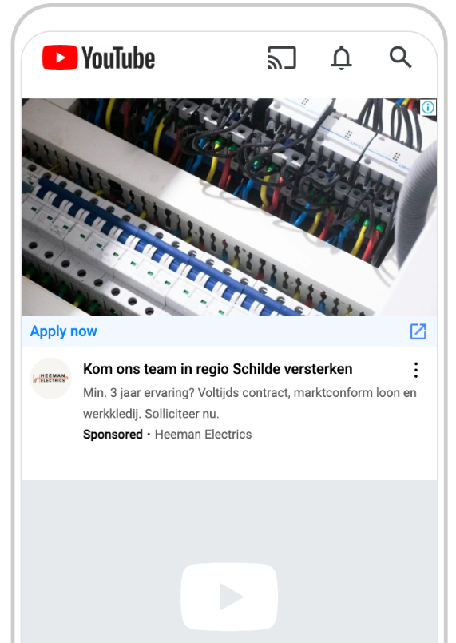
| Koppen (max. 40) | |
|---|---|
| 1 | Junior elektricien gezocht |
| 2 | Vacature elektricien regio Schilde |
| 3 | Net afgestudeerd in elektriciteit? |
| 4 | Leer het vak op de werf |
| 5 | Ook stageplaatsen in regio Schilde |
| Lange kop (max. 90) | |
| Net afgestudeerd in elektriciteit? Leer het vak op de werf in regio Schilde. Ook stage. | |
| Beschrijvingen (max. 90) | |
| 1 | Opleiding op de job, met begeleiding van ervaren collega’s. Ook stageplaatsen mogelijk. |
| 2 | Voltijds contract, marktconform loon en werkkledij. Werven in Schilde en omgeving. |
| 3 | Solliciteer online met je cv. We nemen binnen 5 werkdagen contact met je op. |
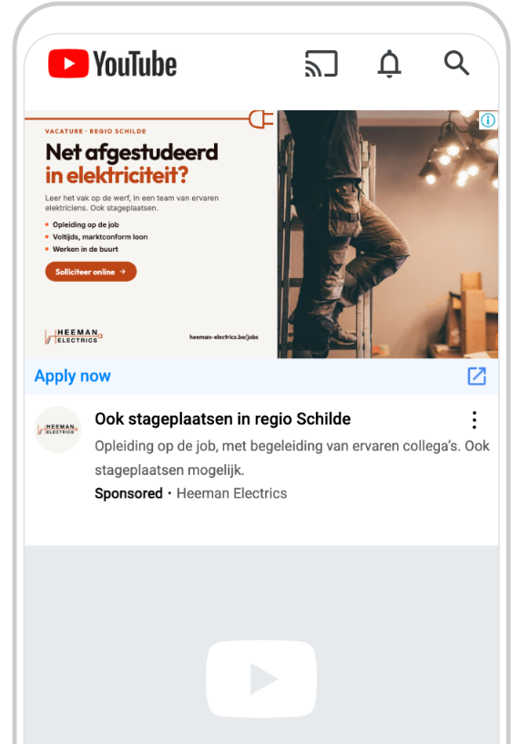
Voor beide: bedrijfsnaam “Heeman Electrics”, logo, knop “Solliciteren” (Apply now), merkkleuren #be4516 en #1c0d0a.
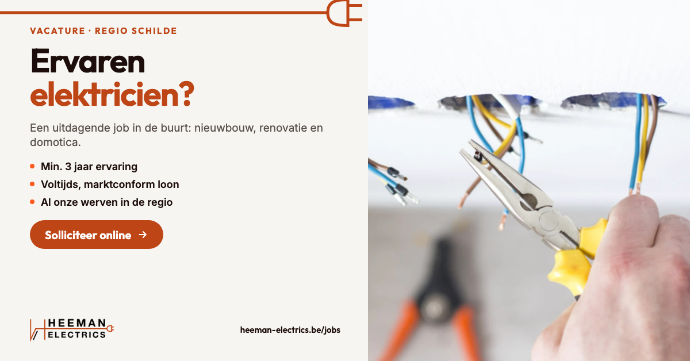
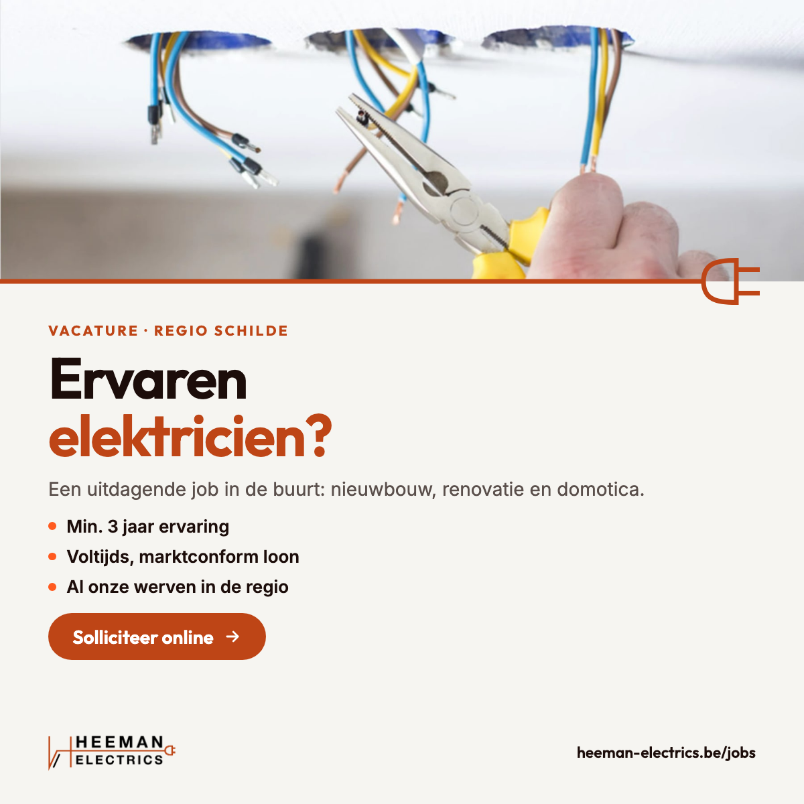
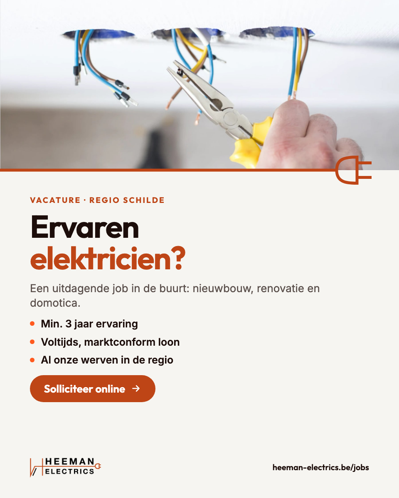
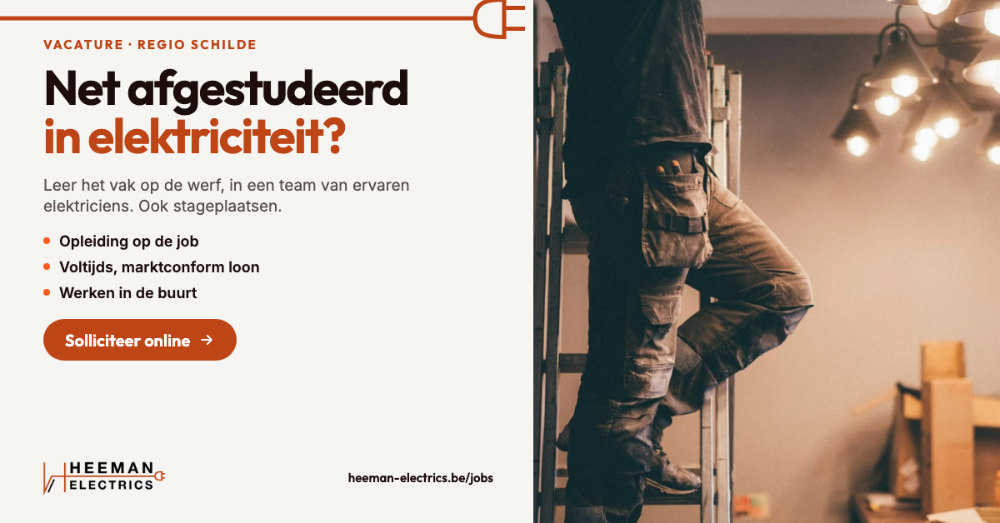
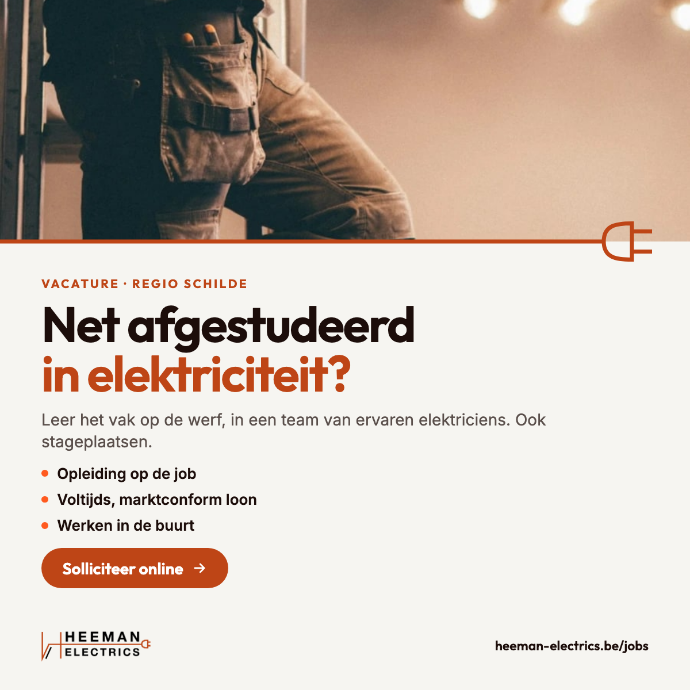
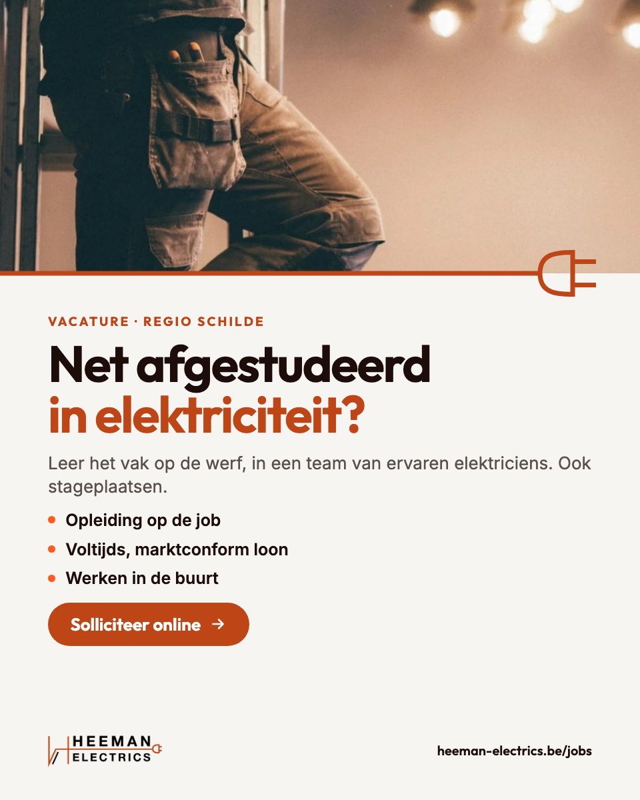
Voor de beelden naast de zoekadvertenties en als extra beeld in Demand Gen (Google weigert tekst op beelden bij Search). Generieke foto’s, geen gezichten, niet voorgesteld als eigen werk.
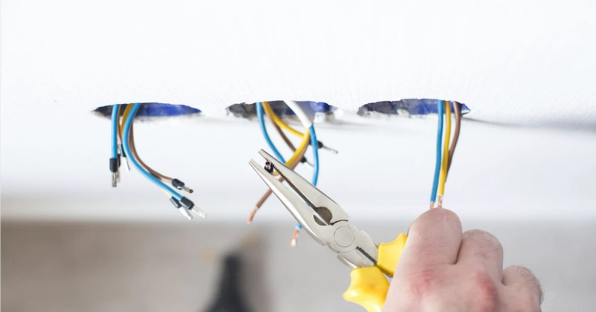
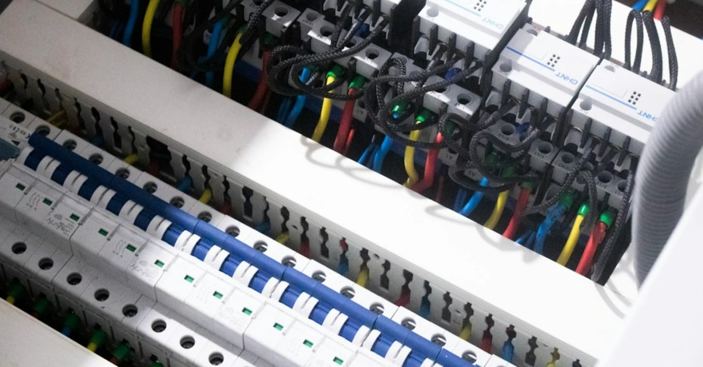
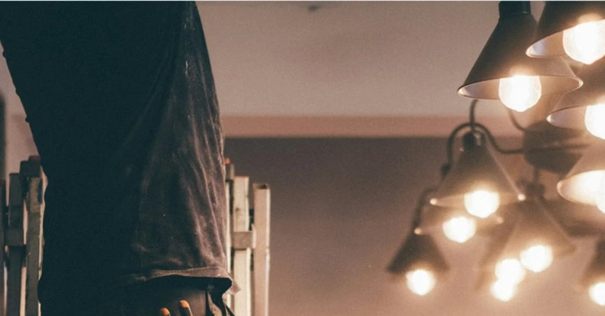
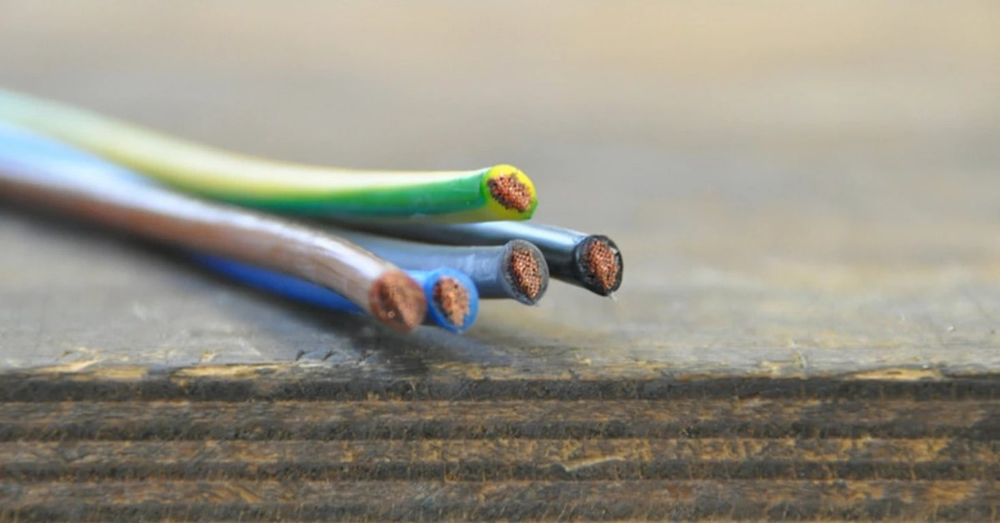
Elk beeld bestaat ook in vierkant formaat (1200×1200).
| ☐ | Teksten kloppen (ervaring, voltijds, marktconform loon, werkkledij, opleiding, stage, reactie binnen 5 werkdagen) |
| ☐ | “Kom ons team versterken” en “Ervaren collega’s helpen je” zijn oké |
| ☐ | Regio: enkel de buurt van Schilde |
| ☐ | Budget: ± € 182 over ± 2 maanden (Demand Gen € 70 in de eerste 2 weken) |
| ☐ | Beelden en foto’s zijn oké |